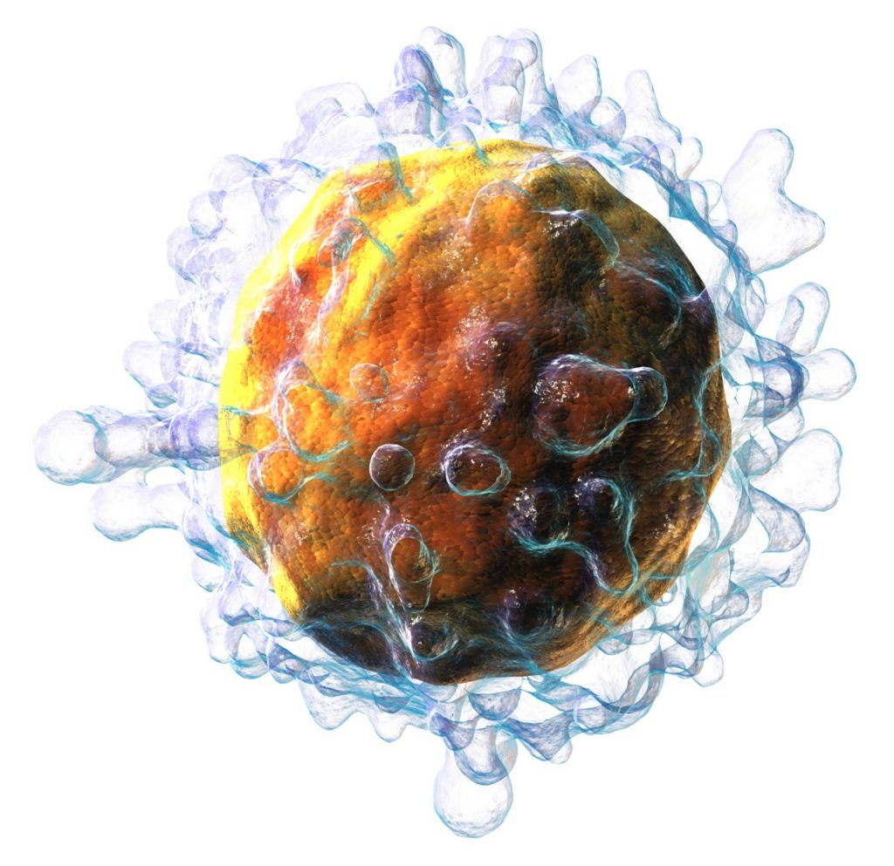

အဖုအကျိတ်ြဖစ်စေတဲ့ ကင်ဆာရောဂါတွေအတွက် ဆေးတစ်ကြိမ် သွင်းရုံနဲ့ လုံလောက်ပါတယ်တဲ့။ ဒီကုထုံးသစ်ဟာ လက်ရှိကုထုံးတွေနဲ့ ယှဉ်ရင် ဘေးထွက်ဆိုးကြိုးလဲ နဲပါးနိုင်သလို ကင်ဆာဆဲလ်တွေကို တိုက်ခိုက်ရာမှာ ပိုပြီးတော့လဲ ထိရောက်နိုင်ပါတယ်။ အခုကုထုံးကို Science Translational Medicine ဆေးပညာဂျာနယ်မှာ တင်ပြထားတာ ဖြစ်ပါတယ်။ ဒီစာတမ်းကို တင်ပြခဲ့သူတွေထဲက တစ်ယောက်ြဖစ်တဲ့ ဒေါက်တာ ရေးနော့လ်ဒ် လီဝီက “အခုဆေးနှစ်မျိုးကို ပေါင်းစပ်ပြီး သုံးစွဲတဲ့ အခါမှာ ကိုယ်ခန္ဓာအနှံ့က ကင်ဆာဆဲလ်တွေ ပျက်စီးသွားတာ တွေ့ရပါတယ်” လို့ ပြောကြားခဲ့ပါတယ်။
ဒေါက်တာ လီဝီနဲ့ အဖွဲ့ဟာ ရောဂါကာကွယ်ရေး စနစ်ကို လှုံ့ဆော်မှု ပေးနိုင်တဲ့ ဆေးဝါးနှစ်မျိုးကို ကင်ဆာဖြစ်နေတဲ့ ကြွက်တွေရဲ့ ကင်ဆာအကြိတ်ထဲကို ထိုးပေးခဲ့တာ ဖြစ်ပါတယ်။ ထူဆန်းတာကတော့ ဆေးထို့ခံရတဲ့ အကြိတ်တင်မက ကိုယ်ခန္ဓာရဲ့ အခြားနေရာတွေမှာ ရှိနေတဲ့ ကင်ဆာဆဲလ်တွေပါ သေဆုံးကုန်တာပဲ ဖြစ်ပါတယ်။ သုတေသနမှာ ပါဝင်တဲ့ ပညာရှင် တွေကတော့ ဒီနည်းနဲ့ ကင်ဆာရောဂါ အားလုံးကို ကုသပေးနိုင်လိမ့်မယ်လို့ ယုံကြည်ကြပါတယ်။
ဒီလို ရောဂါ ကာကွယ်ရေးစနစ်ရဲ့ တီဆဲလ် (T-cell) တွေကို အသုံးပြုပြီး ကင်ဆာကုဖို့ သိပ္ပံပညာရှင်တွေ ကြိုးစားနေခဲ့ကြတာ အတော်ကြာပါပြီ။ တီဆဲလ်တွေဟာ ကင်ဆာဆဲလ်တွေကို တိုက်ဖျက်တဲ့ နေရာမှာ အလွန်အစွမ်းထက်ပြီး အားကောင်းကြပါတယ်။ ဒါပေမယ့် ကင်ဆာဆဲလ် တွေမှာလဲ ဒီတီဆဲလ်တွေကို လှည့်စားနိုင်တဲ့ နည်းလမ်းတွေ ရှိကြပါတယ်။ ဒါ့ကြောင့် ကိုယ်ခန္ဓာရဲ့ အစွမ်းထက်တဲ့ တီဆဲလ်တွေဟာ ကင်ဆာတော်တော်ပြန့်လို့ အချိန်လွန်မှပဲ ကင်ဆာရှိနေမှန်း သိကြပါတယ်။ ကိုယ်ခံအားစနစ်နဲ့ကုထုံး (immunotherapy) တွေက ဒီသဘာဝ ခုခံစွမ်းအားကို အားကောင်းအောင်၊ ပြီးတော့ ကင်ဆာဆဲလ်တွေကို မှတ်မိပြီး ရှာဖွေနိုင်အောင် ကူညီခြင်းအားဖြင့် ကင်ဆာကို ကုသတာပါ။

ဒီကုထုံးမှာ သုံးတဲ့ ဆေးနှစ်မျိုးထဲက တစ်မျိုးက FDA (အစားအစာနှင့် ဆေးဝါးကွပ်ကဲရေးဌာန) ရဲ့ ခွင့်ပြုချက်ရပြီးပါပြီ။ နောက်ဆေးတစ်မျိုးကတော့ လင်ဖိုးမားကုထုံးအတွက် ခွင့်ပြုချက်ရဖို့ စမ်းသပ်နေဆဲ့ ဖြစ်ပါတယ်။ ဒီဆေးတွေဟာ အစွမ်းထက်ရုံတင်မကဘူး ဈေးလဲ သက်သာ ပါသေးတယ်။ “ဒီနည်းလမ်းဟာ ရောဂါကာကွယ်ရေး စနစ်ကို ကင်ဆာဆဲလ်တွေကို ဘယ်လိုရှာဖွေ ဖျက်ဆီးရမလဲဆိုတာ သင်ပေးနိုင်ပါတယ်။ ဒီလိုသင်ပေးပြီးနောက်မှာ ရောဂါကာကွယ်ရေး စနစ်က ကိုယ်ခန္ဓာအနှံ့ ကင်ဆာဆဲလ်တွေကို ရှာဖွေဖျက်ဆီး ပေးတော့တာပါပဲ” လို့ ဒေါက်တာ လီဝီက ပြောပါတယ်။
ထိုးပေးတဲ့ ဆေးတစ်မျိုးကတော့ ဓါတ်ခွဲခန်းထဲမှာ ထုတ်လုပ်ထားတဲ့ DNA အပိုင်းအစလေးပဲ ဖြစ်ပါတယ်။ DNA ဆိုတာက မျိုးရိုးဗီဇကို သယ်ဆောင်တဲ့ ပစ္စည်းပဲ ဖြစ်ပါတယ်။ နောက်တစ်မျိုးက ကိုယ်ခံကင်းစောင့်စစ်သားဖြစ်တဲ့ anti-body တစ်မျိုးဖြစ်ပါတယ်။ ဒီနှစ်ခုလုံးက တီဆဲလ်တွေကို လှုံဆော်ပေးပါတယ်။ ဒီတီဆဲလ်တွေကမှာ ကိုယ်ခန္ဓာအနှံ့ ကင်ဆာဆဲလ်တွေကို ရှာဖွေတိုက်ခိုက်တာ ဖြစ်ပါတယ်။ ကုသမှု ထိရောက်မှု ရှိမရှိ စမ်းသပ်ဖို့ သုတေသီတွေဟာ လင်ဖိုးမား ဖြစ်နေတဲ့ ကြွက် အကောင် ၉၀ ကို ဆေးထိုးစမ်းခဲ့ပါတယ်။ အကောင် ၉၀ မှာ ၈၇ ကောင်က လုံးဝကင်ဆာ ပျောက်သွားပါတယ်။ ကျန်တဲ့ ၃ ကောင်ကလဲ ဒုတိယအကြိမ် ဆေးထိုးအပြီးမှာ ကင်ဆာပျောက်သွားပါတယ်။ ရင်သားကင်ဆာ၊ အရေပြားကင်ဆာနဲ့ အူမကြီး ကင်ဆာ ဖြစ်နတဲ့ ကြွက်တွေမှာလဲ အလားတူ ရလဒ်တွေ တွေ့ရပါတယ်။
ဒီနည်းသစ်ရဲ့ အားနဲချက် တစ်ခုကတော့ တီဆဲလ်တွေဟာ သူတို့ ပထမဆုံးရှာတွေ့တဲ့ ကင်ဆာဆဲလ်ကိုပဲ သတ်နိုင်တာပါ။ လင်ဖိုးမားရော အူမကြီးကင်ဆာရော ဖြစ်နေတဲ့ ကြွက်တွေကို ဆေးထိုးစမ်းသပ်တဲ့ အခါမှာ လင်ဖိုးမားကိုပဲ ပျောက်ကင်းစေပြီး အူမကြီးကင်ဆာ မပျောက်တာ တွေ့ရပါတယ်။ ဒါဟာ ဘာကြောင့်လဲ ဆိုတော့ တီဆဲလ်တွေက သူတို့ပထမဆုံး စတင်ရှာဖွေ တွေ့ရှိတဲ့ ကင်ဆာဆဲလ်နဲ့ အလားတူတဲ့ ကင်ဆာဆဲလ်တွေကိုပဲ မှတ်မိနိုင်လို့ပါတဲ့။
အကယ်လို့ လူတွေမှာသာ စမ်းသပ်မှု အောင်မြင်ခဲ့မယ်ဆိုရင် နောင်ဆို ကင်ဆာအကြိတ်တွေကို ခွဲစိတ်ဖယ်ရှားပြီးတိုင်း ဒီဆေးကို ထိုးကြလိမ့်မယ်လို့ ဒေါက်တာ လီဝီက မျှော်လင့်ပါတယ်။ ကြွက်တွေမှာ အောင်မြင်ပေမယ့် လူတွေမှာ ဘယ်လောက် အောင်မြင်မလဲ ဆိုတာကတော့ လက်ရှိ လူသားစမ်းသပ်မှု (Clinical Trials) တွေပြီးဆုံးလို့ ရလဒ်တွေ ထွက်လာမှပဲ သိရမှာပါ။ ဘာပဲဖြစ်ဖြစ် ကင်ဆာရောဂါသည်တွေ အတွက်တော့ ဒါဟာ သတင်းကောင်း တစ်ရပ်ပါပဲ။
Source: Big Think | New therapy cures cancer with just one injection